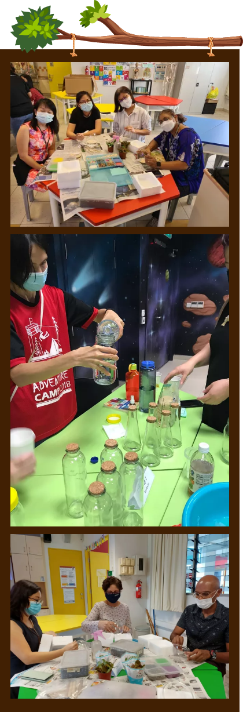

Staff Workshops
FHPS believes strongly in staff engagement. To build team rapport, a series of workshops have been conducted to allow the team to grow together as FHPS family.
staff workshops
Wondrous Wednesday
Workshop
In line with our 80th Anniversary Celebrations, the planning team has lined up workshops of hands-on experiences to promote responsible consumption and production. Teachers can choose to make their own Custom-Designed Natural Soap, Arts and Science of Brewing Kombucha, Arts and Science of Eco Enzymes or 'Make Your Own Open Terrarium'.
